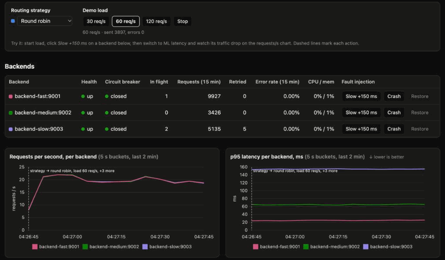

Results by scenario
Latency per strategy, mean of the runs; hover a bar for ± standard deviation and min–max.
Charts and headline show
| Scenario | Strategy | Runs | p50 (ms) | p95 (ms) | p99 (ms) | Avg latency (ms) | Error rate | Throughput (req/s) |
|---|
Live demo
The dashboard under load: a backend is slowed by 150 ms (round robin keeps sending it a third of the traffic), the strategy is switched to ML latency (traffic moves away within seconds), then the fast backend is crashed (circuit breaker opens, retries keep clients error-free) and restored.

How it works
flowchart TD C["Clients"] -->|"TCP :8080"| L["Listener thread"] L --> Q[["Bounded queue"]] --> W["Worker thread pool"] W --> RT["Router
healthy, breaker-closed backends"] HC["Health checks
+ circuit breaker"] -.-> RT RT --> S["Strategy
round robin · least conn. · ML latency · bandit"] HB["Live stats
in-flight, latency, UDP heartbeats"] -.-> S M[("Latency model
trained offline")] -.-> S S --> P["Proxy
pooled connections, timeouts, GET retries"] P --> B1["Backend fast"] & B2["Backend medium"] & B3["Backend slow"] W --> DB[("PostgreSQL
request log")] DB -.-> M
- Concurrency: a listener thread accepts TCP connections into a bounded queue; a fixed pool of worker threads serves them (producer-consumer with condition variables), so overload costs latency, not unbounded threads.
- Reliability: active health checks (TCP +
GET /health), a circuit breaker per backend fed by real requests, retries of idempotent requests on another backend with exponential backoff, and token-bucket rate limiting. - Strategies: round robin rotates; least connections picks the fewest requests in flight; ML latency predicts each backend's response time with a linear model (in-flight requests, CPU, memory, recent latency) trained offline on earlier runs; the bandit is epsilon-greedy over each backend's last 50 latencies. Both ML strategies fall back to least connections when they can't decide within 2 ms.
- Logging: every request goes to PostgreSQL through one writer thread in batched transactions; results are computed in SQL.
Methodology
- Every run starts fresh backend processes and a fresh load balancer, so no state carries over.
- Load is open-loop: requests are sent on a Poisson schedule whether or not earlier ones have answered, so a slow server shows up as latency instead of quietly reducing the load.
- Every strategy gets the same random seeds, so it sees the identical sequence of arrivals. The seeds differ from those of the runs the ML model was trained on.
- Each cell is reported as the mean ± standard deviation over the runs, with the min–max range. A "winner" is only named when its latency (at the chosen percentile) beats the others by more than that spread; otherwise the card says it's a tie.
- p50, p95 and p99 are computed the same way everywhere: Postgres
percentile_cont(linear interpolation) over a run's successful requests, all three from one sort. - Retries were off during the experiments, so errors show what the routing did. Each run's request log was cross-checked against the load generator's own count.
- Limitations: one laptop, synthetic backends with artificial delays, and a single (not replicated) load balancer. The model was trained on earlier runs of the same scenarios, so this is its best case.